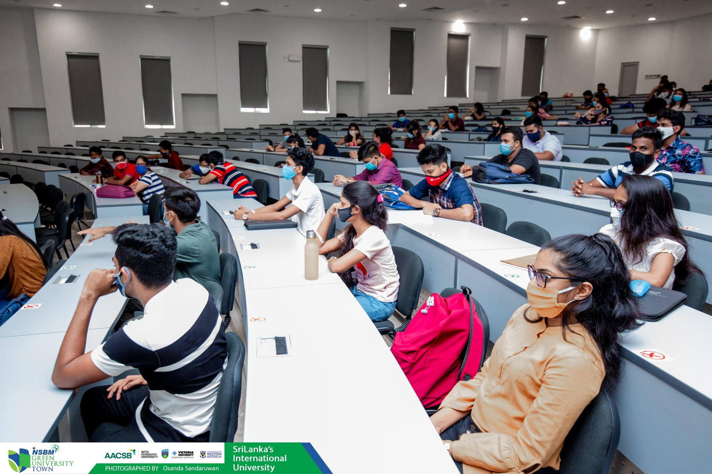

Welcome to About us
IJSE is the only software engineering institute in Sri Lanka with more than 13 years of excellence, contributing more than 4500 highly capable software engineers to the IT industry thriving to uphold our mission “Contributing most capable and reliable software engineers with profound knowledge in most recent technologies who can match up to demands of ever-evolving IT industry”. With decades of our experience, guaranteeing IT jobs for the younger generation, IJSE has paved the path for them to achieve countless possibilities for them. Since its inception in 2006, never disappointing the expectations of the students, IJSE, with its unique set of courses and training programs, IJSE has proven that a Job in the IT industry no longer just a dream. With the guidance of Mr.Prasad Waduge (CEO) and Mr.Niroth Samarawickrama (Senior Lecturer/Training Director), IJSE has thrived to excellence becoming the only Software Engineering Education facilitators in Sri Lanka. With minimum advertising and with an unrivaled output of software engineers IJSE has proven its capabilities without any room for arguments. With highly capable training panels rich in professional experiences from well-reputed companies, it’s guaranteed that students are exposed to the latest technologies and concepts ensuring their foothold in the IT industry.
